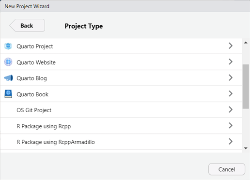

projectlog
projectlog.RmdTO BE EXPANDED SOON
Below are brief examples of how projectlog can be used
over the course of your project.
Initiating your project
To initiate your project, go to ‘File > New Project…’ and select ‘New Directory’. In the overview of R project templates, select ‘projectlog Template’ (see below).

You will have a couple of choices to make. First, choose an informative directory name (i.e., the name of your project) and indicate where you want it to live on your PC. It is good practice to keep related projects in the same subdirectory. Second, you will have to specify the project type. You have the choice between a ‘single_study’ and a ‘multistudy’ project. Both are very similar, with the difference that in the multistudy version, some of the subfolders are nested under a ‘study1’ folder. Third, you indicate if and how you want to keep track of package dependencies. You have the choice between ‘None’, ‘renv’, and ‘groundhog’. For more information about dependency management, see the dedicated vignette. Fourth, you can choose a specific preregistration template (either asPredicted, the template for secondary data analysis, or an empty template). Finally, you can indicate whether you want the GitHub Repository to be set to private (i.e., only visible for you) or to public (i.e., visible for anyone). This setting can be changed later on through GitHub.
After making your decisions, you’re all set to initiate your project. If everything goes well, initiation should look something like this:
#> ── Create project folder structure ─────────────────────────────────────────────────────────────────────────────────────────────────
#> ✔ All folders and related files were successfully created. The directory looks as follows:
#> test-repo
#> ├── codebooks
#> ├── data
#> ├── manuscript
#> │ └── README.Rmd
#> ├── materials
#> │ └── README.Rmd
#> ├── preregistration
#> │ └── README.Rmd
#> ├── scripts
#> │ └── README.Rmd
#> └── supplement
#> └── README.Rmd
#> ── Setting up project dependency management ────────────────────────────────────────────────────────────────────────────────────────
#> ✔ Initiated `groundhog` for managing package dependencies ('dependencies.R'). See <https://groundhogr.com/> for more information.
#> ── Configure Git ───────────────────────────────────────────────────────────────────────────────────────────────────────────────────
#> ✔ Working version of Git found!
#> #> ✔ Local Git configuration was succesful.
#> ✔ Adding '.Rproj.user', '.Rhistory', '.Rdata', '.httr-oauth', '.DS_Store' to '.gitignore'
#> There are 9 uncommitted files:
#> * '.gitignore'
#> * '.projectlog/'
#> * 'dependencies.R'
#> * 'manuscript/'
#> * 'materials/'
#> * 'preregistration/'
#> * 'scripts/'
#> * 'supplement/'
#> * 'test-repo.Rproj'
#> Is it ok to commit them?
#> 1: Negative
#> 2: No way
#> 3: For sure
#> Selection: 3
#> ✔ Adding files
#> ✔ Making a commit with message 'Initial commit'
#> ✔ Creating private GitHub repository 'StefanVermeent/test-repo'
#> ✔ Setting remote 'origin' to 'https://github.com/StefanVermeent/test-repo.git'
#> ✔ Pushing 'master' branch to GitHub and setting 'origin/master' as upstream branch
#> ✔ Opening URL 'https://github.com/StefanVermeent/test-repo'
#> ✔ All set! Switching now to your new project at test-repoLogging project milestones to GitHub
Milestones are any major update to your project that you want to give a special tag. Examples are timestamping a preregistration, a final version of analysis code, submission of a manuscript, etc. In other words, milestones are the events in your project history that you want to point out to reviewers and/or future interested readers.
Let’s say that you finished your preregistration and want to mark it
as a timestamped version in GitHub. In order to do this, you would use
the log_milestone function:
log_milestone(
"preregistrations/preregistration.md",
commit_message = "Timestamped preregistration for study 1",
tag = "preregistration"
)log_milestones takes three arguments. The first argument
(…) takes all the files that you want to include in this commit. You can
use either use “.” to include all currently modified files, or you can
include specific files only (e.g., only the preregistration files. See
show_changes() for an overview of all modified files). The
second argument (commit_message) can be used to give your milestone an
informative commit. For example, you can use the commit_message to give
the reader more information about the scope and type of the
preregistration. The third argument (tag) is a unique tag that defines
this milestone. You should use the same tag across all milestones that
achieve the same thing. For example, if you register three
preregistrations over the course of your project, all of them should get
identical tags (e.g., ‘preregistration’).
projectlog does not come with predefined tags, but
instead gives you the freedom to name the tags yourself. The only
requirement is that the tag does not contain spaces and does not end
with a number. The latter requirement is necessary because
projectlog automatically appends a number to your tab if
the same tag was used before. For example, if you’ve used the tag
‘preregistration’ before to timestamp the preregistration for your first
study, and later on use the same tag again to timestamp the
preregistration for your second study, projectlog will
automatically change the new tag to ‘preregistration1’. The reason for
this is that Git tags need to be unique strings. When summarizing your
project history later on, the same tags will be grouped together.
This freedom to define your own tag comes with a trade-off: you will have to be careful that you do not make typos, and that new tags exactly match previous tags (e.g., if you use ‘preregistration’ at one point and ‘prereg’ at a later point, these will be seen as two different types of milestones). Below, we list some examples of tags that might come in handy for many empirical projects:
- 'preregistration'
- 'code'
- 'submission'
- 'revision'Logging data access
One special type of milestone that projectlog allows you
to log is the first time you access certain parts of your data. It is
becoming increasingly common to conduct secondary data analyses on
existing data following open science principles. This is helped, for
example, by specific preregistration
templates for secondary data. In addition, several established
openly available datasets—such as the ABCD study—actively encourage using
the Registered Report format. In such cases, you might want to document
that you only accessed the data after writing your preregistration or
after obtaining Stage 1 acceptance of your Registered Report. You might
even want to explore isolated parts of the data without making crucial
links between dependent and independent variables—for example, making
sure that there is enough variation in key variables.
projectlog allows you to automatically log your access to
the data.
Logging regular changes to GitHub
Aside from logging important milestones, it is good practice to
regularly log changes to your repository to GitHub. This ensures that
you can always go back to previous versions of your project, and that
your code is safe if your PC crashes. For the most part, these
intermediate changes are not important enough to be considered
milestones. For example, they might be incremental updates to your code,
bug fixes, and various intermediate versions of your manuscript. To log
these changes, you would use the log_changes()
function:
log_changes(".", commit_message = "add data exclusions to analysis script")As you can see, log_changes() is very similar to
log_milestone(). The only difference is that
log_changes() does not create a tag that get’s added to the
commit.
Creating your project history
When you create your project using projectlog, the
top-level README file automatically contains code to generate your
project history. This code generates a table in the README file
containing the following information:
- milestone: The name of the milestone (e.g., ‘preregistration’) as a hyperlink which takes you to the tag on GitHub.
- timestamp: The date and time at which the milestone was logged.
- author: The person who created the milestone.
- message: The message that you included when logging the milestone, providing the reader with more context.
- link: A link that takes the reader to the historic version of the project at the moment of the milestone.
You can update the table after logging a new milestone by re-knitting
README.Rmd (by clicking ‘Knit’). Don’t forget to log these
changes to GitHub using log_changes().